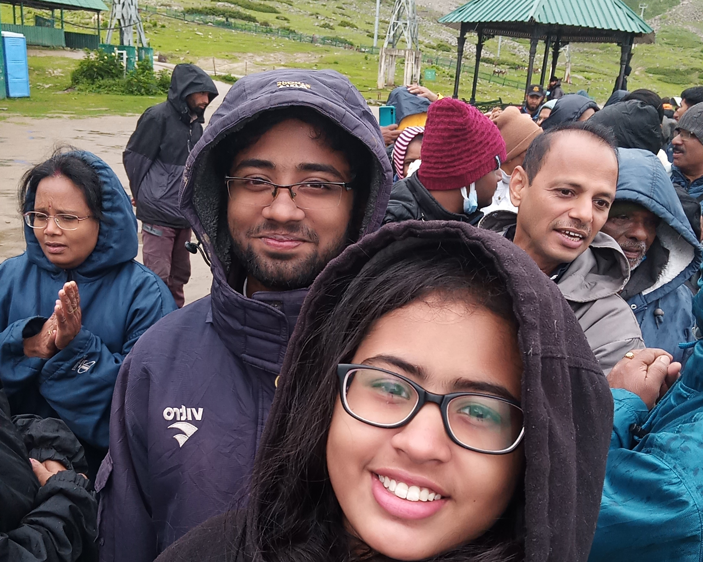

A Trip To Jammu & Kashimmir
The first visit to The North
It was a very morning like time, except for the fact that it wasn't actually morning, when we were finally ready to leave Brahmapur. We took all of our luggage, yep we travel with pretty much a lot of luggage, threw them back of our car which was obviously going to be driven by my father, I'm not yet an expert driver and not to mention the roads to Bhubaneswar, I don't want to die so soon. Very much unlike our last trip, The Kerala Trip, this time we are all pretty sure that we are prepared and nothing worth taking is left behind. And the engine ignited with a cough, or this is what it sounds like to me atleast.
 The diversions. Oh! sorry I mean the roads, I was talking about the roads. They were quite difficult to find, to be honest. Statistically, it won't be a sarcasm to say there were more diversions to the road than the number of roads to have that many diversions. It was almost 11 O'clock in teh night as we reached there at Bhubaneswar. The plan is we were supposed to go to Mahendra Uncle's place where we'd spend the night and early in the morning we would go to the airport, catch a flight to Srinagar. And then we remembered that we precisely don't know which way to go. Couple of moments later, I could find mysel holding the phone while while Papa was asking the address and direction stuff. And in a while we're there at Mahendra uncle's. It was already late and certainly in a funny way there was no place for parking our car. And some how they ended up finding a solution forthat.
We slept there, atleast everyone else and I definitely was not doing late night chatting with my friends, and it's morning before we realised. This is the day our journey actually starts. We, all of us eight people, brushed, took a bath wore the best we could, and started off to the airport. And it being around my third or fourth trip where we're traveling by air, so it look less of a big deal to me. The same set of things just like repeated revisio before exams: boarding pass, luggage, security, and board. It wasn't all that exciting untill we got into the plane, it was not my first flight journey but, things like subtle simple physics behind airlift and drag and application of Bernoulli's theorem in all these things always manage to fascinate me, just how the speed of the airplane is creating the aerostatic pressure difference between top and bottom of the wings resoponsible for the airlift and all these nerdy things. Perfectly engineered. But I could find my sister, and probably evrey other member of our company or even every other passenge, is more interested in the clouds. Apart from the fact that everything is ironically cheaper in the plane, there's nothing more to write about the next couple of hours
The next worth noticing things were the other airports that we halted on our way to srinagar. The one at Delhi IGIA, is literally massive. and ther was a bit longer halt at Jammu airport, which was also an airbase. A lot of people alighted the plane there, and only a few more boarded the plane. It was a very high security one, lots of checkings were done, even on the plane. Our next destination was Srinagar Airport. There was some lady by the name Junifer from the travel agency who provided us with the most of the things we might require including a driver, sarcastically with a half broken car to show us around Srinagar and nearby places.